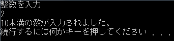
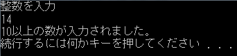

条件判断
条件判断の文は if (条件式) 真の時実行する構文; とします。
条件式とは「正しい（真）」か「正しくない（偽）」かの式です。
正しいときに後の構文が実行されます。
例えば、5>3という式は（大小関係が）「正しい」のでif(5>3)cout<<"正しい"<<endl;とした場合
cout<<"正しい"<<endl;は実行されます。
5<3とした場合は（大小関係が）「正しくない」のでif(5<3)cout<<"正しい"<<endl;とすると、
cout<<"正しい"<<endl;は実行されません。
条件式で使える記号と意味は次の通りです。
| 数学 |
等しい(=) |
大きい(>) |
小さい(<) |
以上(≧) |
以下(≦) |
等しくない(≠) |
〜かつ〜 |
〜または〜 |
〜でない〜 |
| cpp |
== |
> |
< |
>= |
<= |
!= |
&& |
|| |
! |
大体わかりますね。
実行したい構文が複数の場合は
if(条件式){
実行する構文1;
実行する構文2;
:
:
}
としてブロックにします。
それでは例です。
「入力された数値が10以上か、10未満か判断して表示する。」
#include <iostream>
using namespace std;
void main(){
int num;
cout<<"整数を入力"<<endl;
cin>>num;
if(num>=10)cout<<"10以上の数が入力されました。"<<endl;
if(num<10)cout<<"10未満の数が入力されました。"<<endl;
}
結果::
|

|

|
|
入力値が10未満(2)の時
|
入力値が10以上(14)の時
|
BASICと同じように
if(条件式){}
else {}
や
if(条件式1){}
else if(条件式2){}
else {}
が使えます。
上のコード中のif文2個はif(){} else{}に書き換えられます。
複数の条件式
条件式を重ねるには&&(かつand)、||(またはor)、!（でないnot）でつなげます。
int num;
cin>>num;
if(3<num && num<10){cout<<"4〜9なら実行される。"<<endl;}
真と偽
真とは「正しい」ことですが、同時に二進ビットで「1」でもあります。
逆に偽とは「正しくない」ことで、同時に二進ビットで「0」でもあります。
真、偽をそれぞれ「true」「false」といいます。
なので、if(true)cout<<"必ず実行される。"<<endl;となります。
変数型boolはこのような真偽値を扱います。
boolは「true」か「false」しか値を保存できません。
「じゃあint型の方がよくね？」と思われるはずです。
確かにint型でも十分ですが、intはあくまで整数を表しますので、整数以外のところでintを使うのはよくありません。
それに、変数1個のサイズもintは4バイト、boolは1バイトなので小さくなります。
小さなプログラムでは気になりませんが大きくなってくると差がでます。
節約できるところは節約しましょう。 限りある資源を大切に。
boolは主にフラグとして使われます。
bool flag;
flag=true; //flagをtrueに
if(flag)cout<<"実行される。"<<endl;
flag=false; //flagをfalseに
if(flag)cout<<"実行されない。"<<endl;